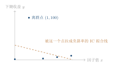

第十四章因子也要写体检报告：IC、RankIC、分组与衰减
14.1九月十一日，盘后那行正数
二零二六年九月十一日，周五，收盘之后。 那天盘前的六维判势给的是“退潮风险”：调整后总分 25.71，仓位系数 0.06系统表market_sixdim_daily 的 2026-09-11 记录：adjusted_total_score = 25.71，position_rate = 0.06，market_tag = 退潮风险。1。系统那天没让我买入任何东西。
同一份盘后复盘里，动量因子的 RankIC 是一个正数。
我盯着这个正数看了很久，然后问了它三句话。
第一句：准到什么程度？它是一个正数，可它是 0.004 还是 0.08？这两个数字对应的含义完全不同：前者是噪声，后者是一年里都难得见到的好因子。
第二句：覆盖了多少股票？如果这个正数是由全市场九千多只股票算出来的，那它是一份普查结果；如果它是由八只股票算出来的，那它是一次抛硬币。
第三句：能维持几天？如果它只在最近五个交易日有效，那我下周就得重新评估它；如果它已经连续二十周为正，那我有理由把它写进权重里。
三句问完，我发现我手里的这个“正数”，什么都没回答。
这不是复盘工具坏了。这是我在用一把只能量长度的尺子，去量一件有三四个维度的事。
所以我决定给每个因子写一份体检报告——不是一行数，是一张表。
14.2跟着一个天气预报员上班
我想到的是一个很笨的办法：跟着一个天气预报员上一整年的班，每天记录他一件事。
我在本子上画四栏。
第一栏：他报得准不准。他说明天有雨，第二天真下雨了吗？这一栏记的是方向和幅度——他报“小雨”却下了暴雨，和一个只报“有雨”的人，水平不一样。
第二栏：他敢不敢报。一年三百六十五天，他只报了二十天。那二十天他全准了——可这一年里剩下的三百四十五天，我一点信息都没拿到。准确率再高，也不敢用，因为他覆盖的天气太少。
第三栏：他报得早不早。他是昨晚就报，还是今天早上出门前才报？昨晚就能预报的人，我可以在昨天就决定带不带伞；只能在出门前预报的人，我只能站在门口等。
第四栏：把本子撕成两半，两半的看法一致吗。前半年他排的“最能下雨的日子”和后半年他排的，是同几天吗？如果两半段排出来的东西完全不一样，那他的“第一名”就不是本事，是抽签。
四栏记满，我才敢说这个预报员“行”或者“不行”。
14.3不做体检，要付三种代价
在动手算之前，我得先把“为什么必须算”说清楚。因为如果代价不明显，任何人都会选择省事。 代价一：你会在一个只剩八只股票的因子上押注。 动量因子在退潮期的覆盖率会掉。这不是设计缺陷，这是现实：市场下跌时，能同时满足“有足够长的历史 K 线”“有正常的成交量”“不在涨跌停上封着”的股票本来就少。如果覆盖率掉到百分之几，那么 RankIC 这个数基本上就是这八只股票的排位结果。你把它当成“全市场的规律”，就会在下一次调仓时发现它完全不管用。 代价二：你会为一个只在昨天有效的因子付手续费。 这是我最心疼的一笔账。因子准，意味着它每天给出的排序都在变；排序每天变，意味着持仓每天要换。A 股的摩擦不是零：买入收佣金（万三，最低 5 元），卖出收佣金加印花税 0.05%交易口径见internal/portfolio 与 order_cost_tool 的成本模型；核对时间 2026-09-24。2，另外还有市场冲击（这笔账在第 十七 章会精确算，那里会给出平方根冲击律）。
一个每天让你换掉三成持仓的因子，即便它的 RankIC 很漂亮，它挣的钱也可能刚好被这三项摩擦吃完。体检报告里的“衰减”一栏，就是为了提前发现这种事：一个只对 1 天有效的因子，它的收益全落在最短、摩擦最重的那一档上。
代价三：你没法回答“它变差了没有”。
如果不留存历史体检结果，那么“这个因子最近还行吗”这个问题永远只能靠感觉回答。系统的做法是把每次体检按因子名覆盖写入一张表（下面第五节会看到），于是“昨天 0.05，今天 0.02”这件事就变成可查的事实。差异一旦可查，你就能判断到底是因子衰退了，还是你自己的权重调错了。
这三条代价合起来就是一句话：一个因子只有一行数，等于没有报告。
14.4先给一个“差不多对”的模型
现在动手。我先给自己的直觉版本：因子值和下期收益画成一张散点图，如果点斜着往上排，这个因子就有效。 这句话基本是对的，它抓住了“相关”的本质。但它有两个裂缝，我必须当场指出来，否则后面所有的数都会被它骗。 裂缝一：少数几个点能决定整条斜线。一张散点图上，只要有一个点落在极端位置，它能自己把整条拟合线拉歪，而另外几十个点几乎不参与。 裂缝二：斜线是直的，但现实常常是弯的。如果某只股票“因子值从 60 涨到 70”和“从 90 涨到 100”带来的收益完全不一样（这在动量、情绪类因子里非常常见），那么“一条直线的斜率”就描述不了它。 这两个裂缝分别对应两个不同的指标：Pearson 相关（Pearson correlation）和Spearman 秩相关（Spearman rank correlation）。我们要用第二个去补第一个。14.4.1IC 与 RankIC：同一张散点图，两种读法
设某一天收盘后，我们对横截面上的 \(n\) 只股票各拿到两个数：因子值 \(x_i\)，以及它未来 \(h\) 个交易日的收益 \(y_i\)（\(i=1,\dots,n\)）。定义 14.1（IC 与 RankIC）
记 \(\rho\) 为 \(x\) 与 \(y\) 的 Pearson 相关系数，\(\rho_S\) 为它们的 Spearman 秩相关系数。本书沿用系统里的叫法：
\begin{align}\IC &= \rho(x,y) = \frac{\Cov(x,y)}{\sigma_x\,\sigma_y}, \tag{14.1}\\[2pt]
\RankIC &= \rho_S(x,y) = \rho\bigl(\rank(x),\,\rank(y)\bigr). \tag{14.2}\end{align}
其中 \(\rank(\cdot)\) 把每个值换成它在当天的名次（从 1 到 \(n\)；并列取平均名次）。
假设 14.2
本章所有定理都假设当天的因子值与下期收益都没有并列（名次 \(1,\dots,n\) 各不相同）。若存在并列，用平均名次替代，全部结论不变，只是记号变长。
引理 14.3（保序引理）
设 \(g:\R\to\R\) 是严格单调增函数。若 \(y_i = g(x_i)\)，则对每个 \(i\) 都有 \(\rank_i(y) = \rank_i(x)\)。
证明■
严格单调增意味着 \(x_i < x_j \iff y_i = g(x_i) < g(x_j) = y_j\)。所以在把 \(\{x_1,\dots,x_n\}\) 从小到大排队时，任意两个样本的先后关系与把 \(\{y_1,\dots,y_n\}\) 排队时完全相同；由假设 14.2，两串名次逐位相等。
定理 14.4（IC 与 RankIC 的关系）
设 \((x_i,y_i)\)，\(i=1,\dots,n\) 为当天截面样本，并满足假设 14.2。
(i) 若存在严格单调增函数 \(g\) 使 \(y_i = g(x_i)\) 对全部 \(i\) 成立，则
\[\RankIC = 1. \tag{14.3}\]
(ii) 秩变换对“严格单调增”不敏感：对任意严格单调增的 \(g\)，
\[\rho_S\bigl(x,\,g(y)\bigr) = \rho_S(x,y). \tag{14.4}\]
而对严格单调减的 \(g\)，有 \(\rho_S\bigl(x,g(y)\bigr) = -\rho_S(x,y)\)。也就是说，RankIC 只看得见次序是否一致，看不见数值的大小。
(iii) 因此 \(\IC\) 与 \(\RankIC\) 的符号不必相同：存在具体样本使 \(\IC<0\) 而 \(\RankIC>0\)。
证明■
(i) 由引理 14.3，两个名次向量逐位相等，即 \(r_i^{(x)} = r_i^{(y)}\) 对所有 \(i\)。式 (14.2) 于是变成“一个向量与自己的 Pearson 相关”：
\[\RankIC = \frac{\Cov\bigl(r^{(x)},r^{(x)}\bigr)}{\sigma_{r^{(x)}}\,\sigma_{r^{(x)}}} = \frac{\Var\bigl(r^{(x)}\bigr)}{\Var\bigl(r^{(x)}\bigr)} = 1. \qquad \tag{14.5}\]
最后一步用了 \(\sigma>0\)（由假设 14.2，名次互不相同，方差严格为正）。
(ii) 对严格单调增的 \(g\)，由引理 14.3（把 \(x\) 换成 \(y\)、把 \(y\) 换成 \(g(y)\)）得 \(\rank_i(g(y)) = \rank_i(y)\)，故 式 (14.2) 右端一点不变，式 (14.4) 成立。
对严格单调减的 \(g\)：\(x_i<x_j \iff g(x_i)>g(x_j)\)，所以名次被整体反号，即 \(\rank_i(g(y)) = n+1-\rank_i(y)\)。对向量 \(r\) 与 \((n+1)\mathbf{1}-r\) 求相关，常数项 \((n+1)\mathbf{1}\) 平移不影响协方差，也平移不影响方差，于是
\[\rho_S\bigl(x,g(y)\bigr) = \frac{\Cov\bigl(r^{(x)},-r^{(y)}\bigr)}{\sigma_{r^{(x)}}\sigma_{r^{(y)}}} = -\rho_S(x,y). \tag{14.6}\]
(iii) 只需给出一个样本。取 \(n=5\)，因子值与下期收益分别为
\[x = (0,\,1,\,2,\,3,\,4),\qquad y = (0,\,100,\,1,\,2,\,3). \tag{14.7}\]
先算 \(\IC\)。\(x\) 的均值是 \(2\)，偏差为 \((-2,-1,0,1,2)\)，\(\sum_i (x_i-\bar x)^2 = 10\)。\(y\) 的均值是 \(21.2\)，偏差为 \((-21.2,\,78.8,\,-20.2,\,-19.2,\,-18.2)\)，于是
\[\sum_i (x_i-\bar x)(y_i-\bar y) = 42.4 - 78.8 + 0 - 19.2 - 36.4 = -92.0, \tag{14.8}\]
\[\sum_i (y_i-\bar y)^2 = 449.44 + 6209.44 + 408.04 + 368.64 + 331.24 = 7766.8 . \tag{14.9}\]
所以
\[\IC = \frac{-92.0}{\sqrt{10\times 7766.8}} = \frac{-92.0}{278.69} = -0.330 . \tag{14.10}\]
再算 \(\RankIC\)。名次为 \(\rank(x) = (1,2,3,4,5)\)，\(\rank(y) = (1,5,2,3,4)\)。两串名次的均值都是 \(3\)，偏差分别为 \((-2,-1,0,1,2)\) 与 \((-2,2,-1,0,1)\)，因此
\[\sum_i \bigl(\rank_i(x)-3\bigr)\bigl(\rank_i(y)-3\bigr) = 4 - 2 + 0 + 0 + 2 = 4, \tag{14.11}\]
\[\sum_i \bigl(\rank_i(y)-3\bigr)^2 = 4+4+1+0+1 = 10,\qquad \sum_i\bigl(\rank_i(x)-3\bigr)^2 = 10, \tag{14.12}\]
\[\RankIC = \frac{4}{\sqrt{10\times 10}} = 0.400 . \tag{14.13}\]
于是同一个截面样本，\(\IC = -0.330 < 0\)，而 \(\RankIC = 0.400 > 0\)。符号相反，式 (14.3) 与 式 (14.4) 的结论同时得到了实例检验。

注 14.5（常识里那句“IC 和 RankIC 差不多”什么时候成立）
定理 14.4 说的是“一般情形下两者可以翻号”。那么在什么情形下它们确实差不多？
经典结果给出：当 \((x,y)\) 服从二元正态、相关系数为 \(\rho\) 时，
\[\rho_S = \frac{6}{\pi}\arcsin\!\Bigl(\frac{\rho}{2}\Bigr). \tag{14.14}\]
把 \(\arcsin u = u + \dfrac{u^3}{6} + O(u^5)\) 代入 式 (14.14)（\(u=\rho/2\)）：
\[\rho_S = \frac{6}{\pi}\Bigl(\frac{\rho}{2} + \frac{\rho^3}{48} + O(\rho^5)\Bigr)
= \frac{3\rho}{\pi}\Bigl(1 + \frac{\rho^2}{24} + O(\rho^4)\Bigr). \tag{14.15}\]
因为 \(3/\pi = 0.9549\)，所以当 \(|\rho|\) 很小时（截面因子的真实量级正是这个区间），
\[\rho_S = 0.9549\,\rho + O(\rho^3), \tag{14.16}\]
两者相差不到百分之五；而 式 (14.14) 右端关于 \(\rho\) 严格单调增，符号必然一致。这才解释了为什么在“分布规矩”的市场里 IC 与 RankIC 从不打架，而在 式 (14.7) 这种“有离群点”的截面里会当场翻号。
本书只在弱信号区间使用 式 (14.15) 的展开形式，不依赖 式 (14.14) 的精确恒等式。
14.4.2分组收益差：把一个相关系数翻译成钱
体检报告的第二栏我想写成钱的语言。因为“相关系数”这个词对人不友好，而“头尾两组的收益差”是任何人一看就懂的。 做法很土：把当天所有股票按因子值从大到小排，取最前面一批（top 组）和最后面一批（bottom 组），分别算它们的平均下期收益，两者相减。 系统里选的是三等分——最上三分之一与最下三分之一系统源码internal/tools/factor_review_tool.go 的 groupSpread：\(n/3\) 分组，返回 top_group_ret、bottom_group_ret、long_short_spread。核对时间 2026-09-24。3。
那么问题来了：分组收益差和 IC 是不是同一件事的两种说法？在“分布规矩”的前提下，答案是肯定的，而且比例系数可以算出来。
假设 14.6
截面上的因子值 \(x\) 与下期收益 \(y\) 服从二元正态分布：\(x\sim N(\mu_x,\sigma_x^2)\)，\(y\sim N(\mu_y,\sigma_y^2)\)，相关系数为 \(\rho\)。\(\sigma_x>0\)，\(\sigma_y>0\)。
引理 14.7（截断正态的一阶矩）
设 \(Z\sim N(0,1)\)，其密度函数记为 \(\varphi\)，分布函数记为 \(\Phi\)（\(\varphi'(z) = -z\,\varphi(z)\)）。对任意实数 \(c\)：
\[\E[Z\mid Z>c] = \frac{\varphi(c)}{1-\Phi(c)},\qquad
\E[Z\mid Z<c] = -\frac{\varphi(c)}{\Phi(c)}. \tag{14.17}\]
证明■
以第一式为例。条件密度的定义与全概率公式给出
\[\E[Z\mid Z>c] = \frac{1}{\Prob(Z>c)}\int_{c}^{\infty} z\,\varphi(z)\,dz . \tag{14.18}\]
被积函数是一个完全微分：由 \(\varphi'(z)=-z\varphi(z)\) 得 \(z\varphi(z) = -\varphi'(z)\)，于是
\[\int_{c}^{\infty} z\,\varphi(z)\,dz = \Bigl[-\varphi(z)\Bigr]_{c}^{\infty} = -\varphi(\infty)+\varphi(c) = \varphi(c), \tag{14.19}\]
其中用了 \(\varphi(z)\to 0\)（\(z\to\infty\)，因为密度含因子 \(e^{-z^2/2}\)）。而 \(\Prob(Z>c)=1-\Phi(c)\)，代回即得第一式。
第二式同理：\(\displaystyle\int_{-\infty}^{c} z\varphi(z)\,dz = [-\varphi(z)]_{-\infty}^{c} = -\varphi(c)\)，除以 \(\Prob(Z<c)=\Phi(c)\) 得到 \(-\varphi(c)/\Phi(c)\)。
定理 14.8（正态假设下分组收益差与 IC 成比例）
在假设 14.6 下，取 \(q\in(0,1)\)，把 \(x\) 高于其 \(1-q\) 分位点的样本称为 top 组、低于其 \(q\) 分位点的样本称为 bottom 组。记
\[\Delta = \E\bigl[y \mid x > z_{1-q}\bigr] - \E\bigl[y \mid x < z_{q}\bigr], \tag{14.20}\]
其中 \(z_{1-q}\)、\(z_q\) 分别为 \(x\) 的 \(1-q\) 分位点与 \(q\) 分位点。则
\[\Delta = \rho\,\sigma_y\cdot \frac{2\,\varphi\!\bigl(z_{1-q}^{\ast}\bigr)}{q},
\qquad z_{1-q}^{\ast} = \frac{z_{1-q}-\mu_x}{\sigma_x}. \tag{14.21}\]
特别地，\(\Delta\) 与 \(\rho\) 同号，且当 \(q\) 与 \(\sigma_y\) 固定时 \(\Delta\) 与 \(\rho\) 成正比例。
证明■
第一步，写出一元条件期望。由多元正态的条件分布公式（对二元正态，给定 \(x\) 时 \(y\) 的条件分布仍为正态，其均值等于最优线性预测），
\[\E[y\mid x] = \mu_y + \frac{\Cov(x,y)}{\Var(x)}\,(x-\mu_x)
= \mu_y + \rho\,\frac{\sigma_y}{\sigma_x}\,(x-\mu_x). \tag{14.22}\]
第二步，把 top 组的上界换成标准正态刻度。令 \(a = z_{1-q}\)，\(\alpha = (a-\mu_x)/\sigma_x\)。由分位点定义，\(\Prob(x>a)=q\)，而 \(\Prob(Z>\alpha)=1-\Phi(\alpha)=q\) 也正是 \(Z>\alpha\) 的概率；把 \(x\) 标准化即得 \(\alpha = z^{\ast}_{1-q}\)。
第三步，算 top 组的条件期望。对 式 (14.22) 两边在事件 \(\{x>a\}\) 下取条件期望（期望的线性性），再把 \(x\) 标准化为 \((x-\mu_x)/\sigma_x\)，它在这个条件下正是“截断在 \(\alpha\) 右侧”的标准正态：
\begin{align}\E[y\mid x>a]
&= \mu_y + \rho\,\frac{\sigma_y}{\sigma_x}\Bigl(\E[x\mid x>a]-\mu_x\Bigr)\\
&= \mu_y + \rho\,\sigma_y\,\E\Bigl[\frac{x-\mu_x}{\sigma_x}\ \Big|\ x>a\Bigr]\\
&= \mu_y + \rho\,\sigma_y\,\E\bigl[Z\mid Z>\alpha\bigr]
= \mu_y + \rho\,\sigma_y\,\frac{\varphi(\alpha)}{1-\Phi(\alpha)}
= \mu_y + \rho\,\sigma_y\,\frac{\varphi(z^{\ast}_{1-q})}{q}, \tag{14.23}\end{align}
其中倒数第二步用了引理 14.7 第一式，最后一步用了 \(1-\Phi(\alpha)=q\)。
第四步，算 bottom 组的条件期望。同理令 \(b=z_q\)，\(\beta=(b-\mu_x)/\sigma_x\)，则 \(\Prob(x<b)=q\) 且 \(\Phi(\beta)=q\)，于是
\begin{align}\E[y\mid x<b]
&= \mu_y + \rho\,\sigma_y\,\E\bigl[Z\mid Z<\beta\bigr]\\
&= \mu_y - \rho\,\sigma_y\,\frac{\varphi(\beta)}{\Phi(\beta)}
= \mu_y - \rho\,\sigma_y\,\frac{\varphi(z^{\ast}_{q})}{q}. \tag{14.24}\end{align}
第五步，相减。由标准正态的对称性 \(\varphi(u)=\varphi(-u)\)，以及分位点的对称性 \(z_q = -z_{1-q}\)（两者的标准化刻度互为相反数），有 \(\varphi(z^{\ast}_q) = \varphi(z^{\ast}_{1-q})\)。于是
\begin{align}\Delta &= \E[y\mid x>a]-\E[y\mid x<b] \\
&= \rho\,\sigma_y\,\frac{\varphi(z^{\ast}_{1-q})}{q} + \rho\,\sigma_y\,\frac{\varphi(z^{\ast}_{q})}{q}
= \rho\,\sigma_y\cdot\frac{2\,\varphi\bigl(z^{\ast}_{1-q}\bigr)}{q}, \tag{14.25}\end{align}
即 式 (14.21)。
第六步，符号与比例。由假设 14.6，\(\sigma_y>0\)；\(\varphi(\cdot)>0\) 恒成立；\(q\in(0,1)\) 故 \(1/q>0\)。因此 式 (14.25) 右端的\(\rho\) 之外的全部因子都是与 \(\rho\) 无关的严格正数，故 \(\sign(\Delta)=\sign(\rho)\)，且 \(\Delta/\rho\) 与 \(\rho\) 无关。定理证完。
推论 14.9（系统实际使用的三等分）
取 \(q=1/3\)，则 \(z_{1-q}^{\ast}=z_{2/3}=0.4307\)，
\[\varphi(0.4307) = \frac{1}{\sqrt{2\pi}}e^{-0.4307^2/2}
= 0.39894\times e^{-0.09275}
= 0.39894\times 0.91142 = 0.36358, \tag{14.26}\]
\[\Delta = \rho\,\sigma_y\cdot\frac{2\times 0.36358}{1/3}
= 6\times 0.36358\times\rho\,\sigma_y = 2.1815\,\rho\,\sigma_y . \tag{14.27}\]
14.4.3这个等价性在哪里失效
必须把话说透：定理 14.8 的比例性完全建立在假设 14.6（二元正态）上。现实中它至少在三个地方失效。 失效一：胖尾。A 股的日收益分布比正态厚得多（涨跌停、一字板、事件驱动跳空），\(\varphi\) 的尾部密度不再是准确的刻度。此时 \(\sign(\Delta)=\sign(\rho)\) 仍然成立（因为 \(y\) 对 \(x\) 的平均依赖若为单调，头尾组的均值差方向不会反），但 \(\Delta/\rho\) 这个常数会随 \(\rho\)、\(q\) 一起漂移，“2.18 倍”这个换算不再可靠。 失效二：非线性但单调。若 \(y = g(x)+\varepsilon\) 且 \(g\) 严格单调增、\(\varepsilon\) 与 \(x\) 独立、\(\Var(\varepsilon)>0\)，则由定理 14.4(ii) 的思想，名次一致意味着 \(\RankIC\) 会很高，而 \(\IC\) 被 \(g\) 的非线性与噪声 \(\varepsilon\) 压下来。于是“IC 小但分组收益差大”完全可能，比例性被破坏。符号仍然一致——这是本书要保留的那一半结论。 失效三：用样本均值估计头尾。\(\Delta\) 是用有限样本的头尾均值估出来的，它的方差随 \(q\) 变小而急剧变大（\(q=1/3\) 时每组约占 \(n/3\) 个样本；\(q=0.1\) 时每组只剩 \(n/10\)）。定性地看，式 (14.21) 里的 \(1/q\) 是“放大系数”，而估计误差并不会被同样地放大，因此极端分组会给出一根噪声极大的曲线。
我在第一版复盘里同时列了 “RankIC = 0.03” 和 “头尾差 = 2.1%” 两行，并且把它们当成两个互相印证的证据：一个说相关性还行，一个说确实赚得到钱。
读完上面这一节我才明白：在正态前提下它们是同一个数。用同一个数的两种刻度当作两个证据，是经典的重复计数。
正确的用法是把分组收益差当作“可读性”工具，而不是“独立性”工具：它帮你把相关系数翻译成人能感觉到的钱，但它不能给你额外的置信度。要额外的置信度，得靠第 十五 章的分半检验。
14.4.4剩下四项：覆盖率、准确率、稳定性、衰减
体检报告剩下的四栏，都能在三行以内说清。 覆盖率。当天真正参与了这次复盘计算的股票数，除以当天的股票池总数：\[\mathrm{coverage} = \frac{n}{N_{\text{universe}}}\times 100\%. \tag{14.28}\]
系统里 \(N_{\text{universe}}\) 取的就是这次复盘解析出来的股票池大小系统源码 internal/tools/factor_review_tool.go，buildFactorItem 中的 coverage := float64(n) / float64(maxInt(totalUniverse, 1)) * 100。核对时间 2026-09-24。4。分母取 \(\max(\cdot,1)\) 是为了防止除零——这是一个不起眼但必要的工程细节。
前瞻准确率。在按因子值排出的前三分之一里，下期收益为正的比例：
\[\mathrm{acc} = \frac{\#\{i\in \text{top}_{1/3} : y_i>0\}}{\#\text{top}_{1/3}}. \tag{14.29}\]
这一栏是“你能不能在赌桌上赢钱”的最直白版本：它不问你赢多少，只问你赢的那次比输的那次多不多。
稳定性（区分度）。系统里这一栏算的是因子得分自身的横截面标准差 \(\mathrm{std}\)系统源码 internal/tools/factor_review_tool.go 的 scoreStd：对当日因子得分求标准差。核对时间 2026-09-24。5——越大说明这个因子把股票“分得越开”。
这里我必须诚实写下一件事：这一栏的名字叫“稳定性”，但它量的其实是“区分度”。第一次读到这个名字时我以为它量的是“IC 的时间序列标准差”（那才是统计意义上的稳定性，而这件事由下一章的分半检验承担）。两者混起来会误判：一个因子完全可以是“每天得分都分得很开、但每天的排序都不同”，这种因子在 stability_std 上很好看，在实际选股上却是噪声。所以读这一栏时，脑子里要把它读成“区分度”，并且知道真正的稳定性另有其人。
衰减。同一批样本，分别按 1 日与 20 日前瞻收益算两次 RankIC，取差：
\[\mathrm{decay} = \RankIC_{20d} - \RankIC_{1d}. \tag{14.30}\]
这个差的符号很要紧：为负，说明这个因子在 1 日尺度上更有效、拉到 20 日就衰减了；为正，说明它是个慢因子，短周期里是噪声，把窗口拉长才显出来。系统注释里明确写着“负值表示短周期有效、长周期衰减”系统源码 internal/tools/factor_review_tool.go 的 calcDecay。核对时间 2026-09-24。6。
单独看“衰减 = \(-0.03\)”没有意义。合起来看才有意义：如果同时“覆盖率 12%”、
stability_std 很高、衰减为负，那这幅画很可能是——少数几只高波动小票在短周期里疯了一把，把 1 日 RankIC 抬了起来。
体检报告的价值不在任何一栏，在于栏与栏之间能不能互相解释。一份所有栏都很好看的报告，反而要更小心。
14.5它在系统里长什么样
纸上讲完了，现在拆机器。 因子复盘在系统里是一个工具：factor_review，实现在目录 internal/tools/factor_review_tool.go 里，类名 FactorReviewTool。它由 NewFactorReviewTool 构造，需要四样东西：行情库管理器、SQLite 管理器、可交易池、以及一个共享的情绪引擎系统源码 internal/tools/factor_review_tool.go 第 35 行的构造签名。核对时间 2026-09-24。7。
它的位置在盘前工作流里。第 五 章讲过盘前七个任务的顺序，其中第二个就是量化分析师的因子健康度检查（FACTOR_HEALTH）。复盘结果再往两个方向走：一个方向是当天的权重（由 factorWeightsFor 读走），另一个方向是次日选股。
一次复盘要落库的东西，是六个指标加上几个溯源字段，一起写进 SQLite 的 FactorQuality 表：按 factor_name 为键做 UPSERT，即同一因子只保留最新一次体检结果系统源码 internal/tools/factor_review_tool.go 的 persistFactorQuality：db.Where("factor_name = ?", name).First(&existing) 命中即更新、未命中即 Create。核对时间 2026-09-24。8。这样这张表永远只有“最近一次体检”的含义，不会越长越大。
表 14.1 是这六栏在代码里的名字，以及它们各自在质量分里占的权重。
| 体检栏 | 代码字段 | 权重 | 它防的病 |
| IC（Pearson） | pearson_ic | — | 参考项，不直接进质量分 |
| RankIC | rank_ic / abs_rank_ic | 0.35 | 信号弱、被离群点翻转 |
| 分组收益差 | long_short_spread | — | 只给人看的可读性翻译 |
| 覆盖率 | coverage_pct | 0.10 | 样本太少的假结论 |
| 前瞻准确率 | top_accuracy | 0.30 | 排前面却不涨 |
| 区分度 | stability_std | 0.15 | 得分挤在一起、没有区分力 |
| 衰减 | decay_20d_minus_1d | 0.10 | 只在极短周期有效 |
| 分半稳定性 | split_half_ic / split_half_stable | 见第 十五 章 | 多重比较产生的假阳性 |
权重总和 0.35 + 0.30 + 0.15 + 0.10 + 0.10 = 1.00。
系统源码 internal/tools/factor_review_tool.go 的 factorQualityFromItem；核对时间 2026-09-24。
// IC 贡献：|RankIC|=0.04 视为满分 0.35
icScore := clampFloat(absIC/0.04, 0, 1) * 0.35
if !halfStable && sampleCount >= 30 {
icScore *= 0.5 // 诚实下线：IC 贡献减半
}
accScore := clampFloat(accuracy, 0, 1) * 0.30
// 区分度：scoreStd 越接近 0.15 区分度越理想
staScore := (1 - clampFloat(absFloat(stability-0.15)/0.15, 0, 1)) * 0.15
covScore := clampFloat(coverage/80, 0, 1) * 0.10
// 短周期衰减：decay<=-0.02 满分，>=0.02 归零
decScore := (1 - clampFloat((decay+0.02)/0.04, 0, 1)) * 0.10
return clampFloat(icScore+accScore+staScore+covScore+decScore, 0, 1)- \(|\RankIC| = 0.04\) 就算满分。这个数字比很多入门教程里说的 0.05、0.06 更宽松，说明它并不指望因子很强，只要求它“能被看见”。
- 覆盖率覆盖 80% 的股票池算满分，也就是这一项几乎总是拿不满——它防的是极端低覆盖。
- 区分度以 \(0.15\) 为理想值：太挤（接近 0）说明因子分不开股票，太散（远离 0.15）说明有极端值把标准差撑大。
- 衰减以 \(-0.02\) 为满分、\(+0.02\) 为零分。注意这是一个窄窗：它奖励“短周期更有效”，但用的是 20 日与 1 日的差，不是收益本身。
sentiment_score 也被纳进了同一套体检。
它的实现方式是并发预取：以 5 个并发位（sem := make(chan struct{}, 5)）遍历股票池，每只股票单独设 20 秒超时，取不到就跳过这一只、不阻塞整场复盘系统源码 internal/tools/factor_review_tool.go 的 computeSentimentScores：信号量容量 5、context.WithTimeout(ctx, 20*time.Second)、单只失败仅记录日志。核对时间 2026-09-24。9。这段代码让我改了一个旧习惯：我以前觉得“因子复盘”只是算数，跑多久都无所谓。事实上它每天盘前要跑，一只股票卡住 20 秒乘上几千只，就是一场事故。复盘工具必须自带超时纪律，这不是优化，是可用性。
最后是一件必须标注清楚的事。体检报告里有一栏是盘口因子，而盘口数据来自 order_book_daily。核对时点上看，这张表里没有任何记录order_book_daily 在核对时点（2026-09-24）为 0 行。本书不为此填充任何估计值。10，因此盘口因子的复盘在当前数据库里拿不到可用样本。这件事本身就是体检报告要防的病之一：一个因子的数据源是空的，它的所有指标都不该被当成有效结论。
14.6常见误解与纠偏
我犯过这个错，而且犯了很久。
我把每天的 IC 记成一条时间序列，然后取平均：“这个因子过去 250 天的平均 IC 是 0.028，不错。”这句话把两件完全不同的事压成了一个数：每天都稳定地小有贡献，和十天空着、一天爆发。
后者的均值可能一样漂亮，但你不能用它——因为你不知道明天是空着的那十天，还是爆发的那一天。而且均值对极端值毫无抵抗力：一天 IC 冲到 0.5，能把 249 天的平淡全部盖章认证。
反制有两条：看分布而不只看均值（分位数、正号天数占比），以及下一章的分半检验。把一条序列压成一个数，是自欺最容易发生的那一步。
上面说过一次，这里再单独列出来，因为它特别容易踩：
stability_std 这个字段名字叫稳定性，算的是当日因子得分的横截面标准差，量的是区分度。
一个因子可以天天都“分得很开”，同时天天排的顺序都不同。这种因子在 stability_std 上很漂亮，但在选股上等于抽签。
要判断“排序本身稳不稳”，看的是 split_half_ic 那一栏——下一章的全部内容。
14.7真实出处
- 因子复盘工具（IC / RankIC / 分组 / 覆盖率 / 准确率 / 区分度 / 衰减 / 分半）：
internal/tools/factor_review_tool.go - 指标计算细节：同文件中的
pearsonIC、spearmanIC、rankIC、groupSpread、topAccuracy、scoreStd、calcDecay、rankFloat - 质量分构造与落库：同文件中的
factorQualityFromItem、persistFactorQuality、blendQuality - 情绪因子并发预取：同文件中的
computeSentimentScores - 落库表：SQLite
FactorQuality（字段Quality、RankIC、Accuracy、Coverage、Stability、Decay、SplitHalfStable、SplitHalfIC、Detail、AutoCalibrate） - 质量分被谁读走：
internal/cio/cio.go的factorWeightsFor（第 十三 章讲过它的clamp与归一化） - 盘口因子数据源：DuckDB
order_book_daily
动手试一试（十分钟）
- 打开系统的 SQLite 库
database/quantpilot.db，查FactorQuality表。看两件事：一共几个因子有记录？每个因子的Quality是多少？ - 挑质量分最低的那个因子，读它的
Detail字段。那是一行形如factor_review@日期 |RankIC|=... acc=... std=... cov=... decay=... half=...的文本。逐项对上本章六栏，看看是哪一栏把它压低了。 - 再挑质量分最高的那个因子，做同一件事。如果它靠的是覆盖率那一栏，你要意识到这个结论很脆——覆盖率一变，它就不是第一名了。
- 最后一个练习不需要电脑：把本章那个五点的反例抄在纸上，手工算一遍 IC 与 RankIC，确认符号相反。